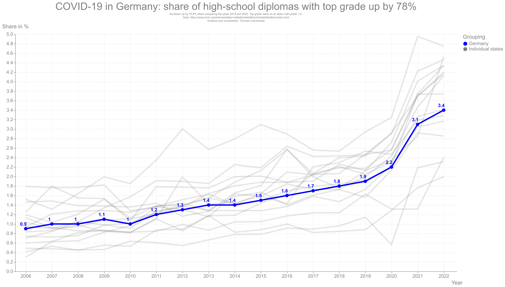
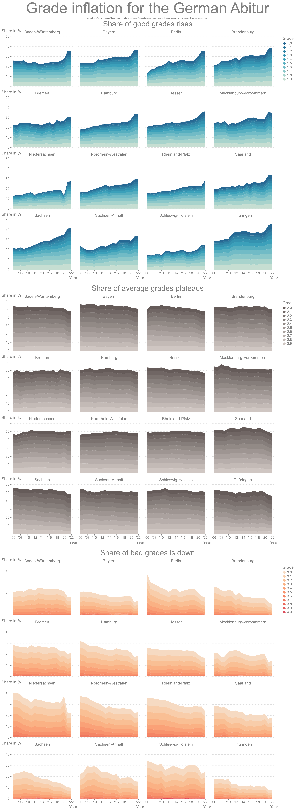

Abiturnoten inflation in Germany
The German Abitur - colloquially known as the ‘Abitur’ - represents the culmination of a student’s secondary education. This advanced level of high school education concludes with an exam of significant importance. Successfully passing the Abitur opens the door to tertiary education institutions - universities, colleges, and certain professional schools. Given the weightage of this examination, an upward trend in the grades observed over the years deserves a closer inspection.
Recently, an intriguing analysis was conducted, plotting the trajectory of Abitur grades over time. The resulting graph reveals a surprising trend: while there has been an increase in the number of good grades, the number of mediocre grades has largely remained unchanged, and bad grades have seen a decline. This pattern merits a deeper dive into the phenomenon of grade inflation, a subject that has been a topic of substantial debate in educational circles worldwide.
Grade inflation refers to the trend where higher grades are awarded for the same quality of work compared to previous years. In essence, the standard of what constitutes a ‘good’ or ‘excellent’ grade is slowly diminished. This can lead to a devaluation of educational attainment, making it more challenging for universities and employers to discern the calibre of graduates. It also raises concerns about the efficacy of the education system itself: are students truly performing better, or are the standards being lowered?
The figure produced from the recent analysis offers visual evidence of grade inflation in the Abitur. The rising trend of good grades suggests that more and more students are performing at a level previously considered exceptional. On the surface, this could be interpreted as a positive development, signaling increased student achievement. However, the stagnation of mediocre grades and the decrease in poor grades provide a different perspective.
Why are mediocre grades stagnating, and why are bad grades dwindling? If the education system is improving uniformly, we would expect an overall shift with improvements across the board. The specificity of this trend suggests that the bar for what constitutes good performance might be lowering, thereby allowing more students to achieve ‘good’ grades.
Furthermore, this pattern is potentially problematic for universities and employers who rely on these grades to gauge a student’s competence. If more students are receiving good grades, the differentiation between an average and an outstanding student becomes blurred, reducing the efficacy of grades as a tool for assessing student abilities.
This analysis is crucial in sparking further discussion on the phenomenon of grade inflation. It opens up a much-needed discourse on the current educational standards and how they are evolving. It also brings to light the importance of maintaining rigorous, consistent grading standards to ensure that grades remain a reliable measure of student achievement.
The journey to understand the German Abitur’s evolving landscape continues, and such investigations provide essential insights. They remind us that while grades are critical, they are just one aspect of education. The ultimate goal should always be the cultivation of knowledge, skills, and character, ensuring that students are truly prepared for the challenges they will face in their futures.

